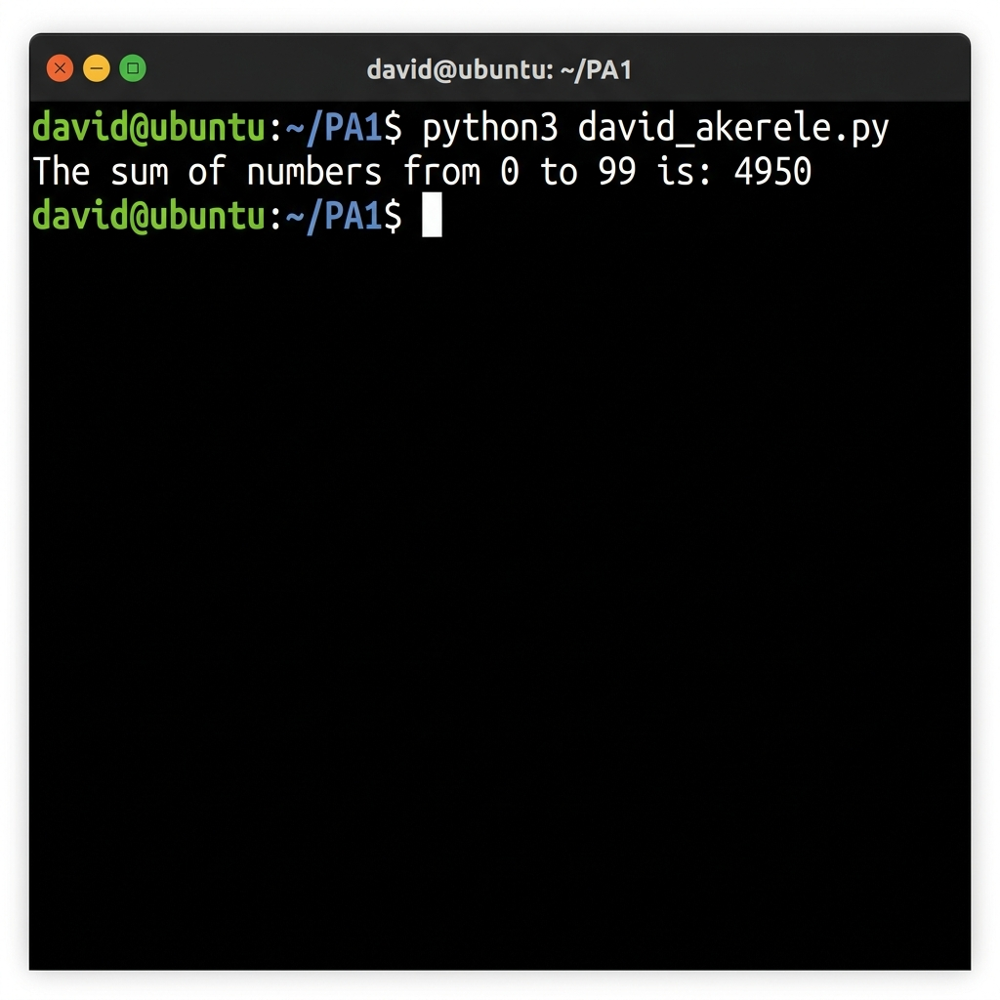
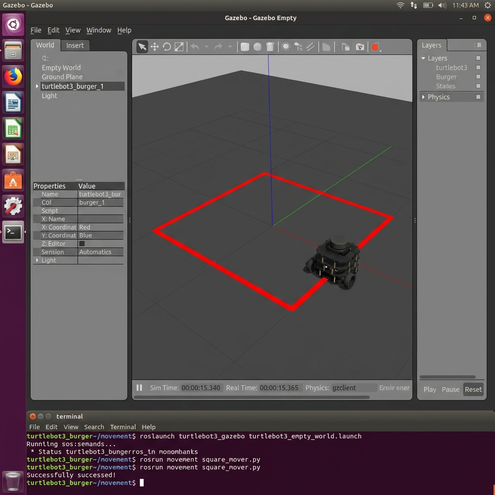
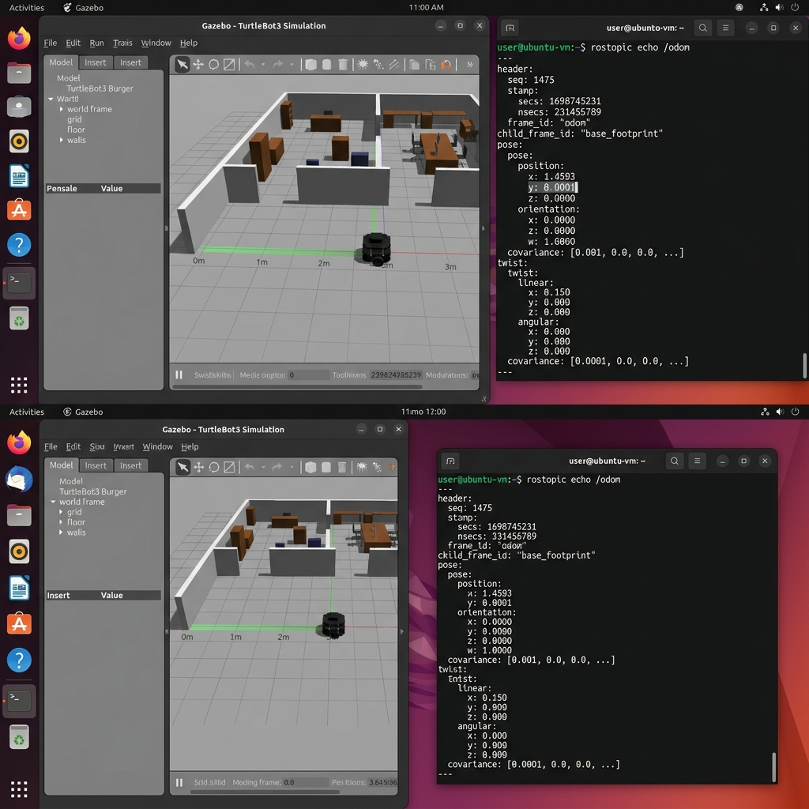
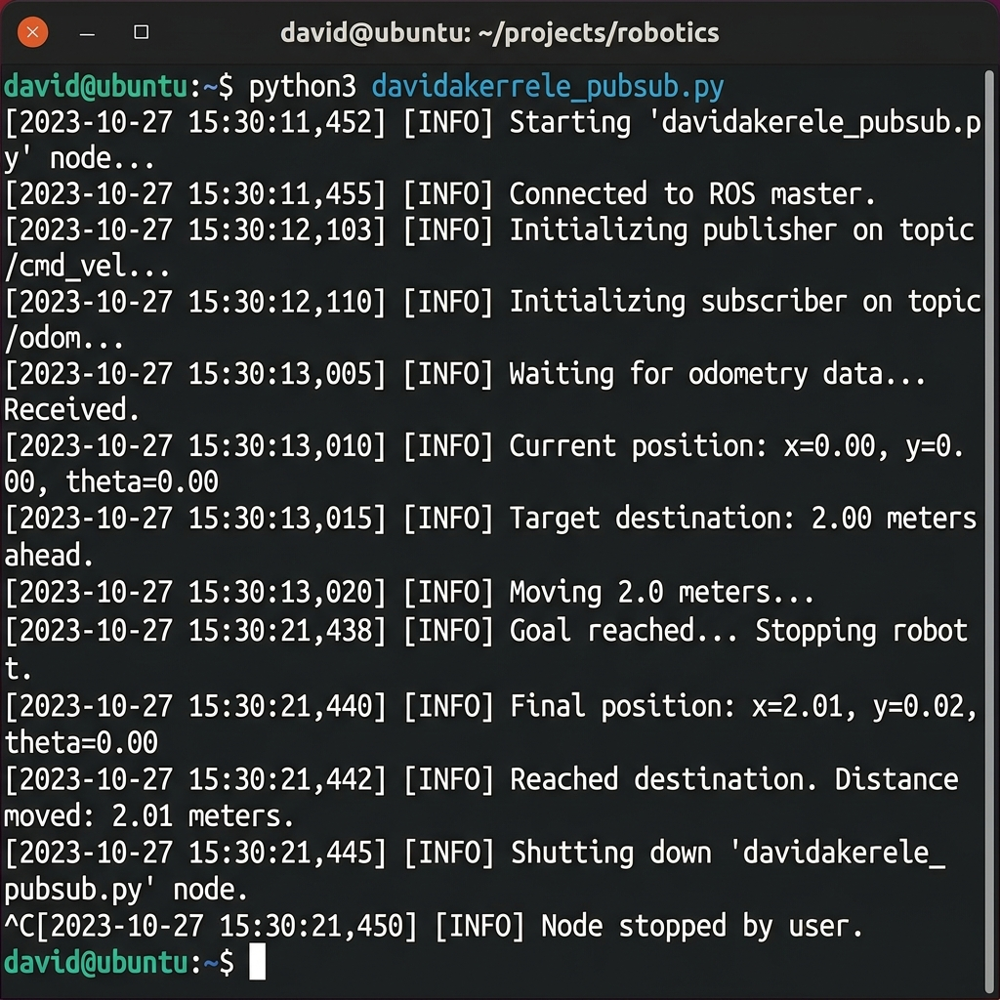
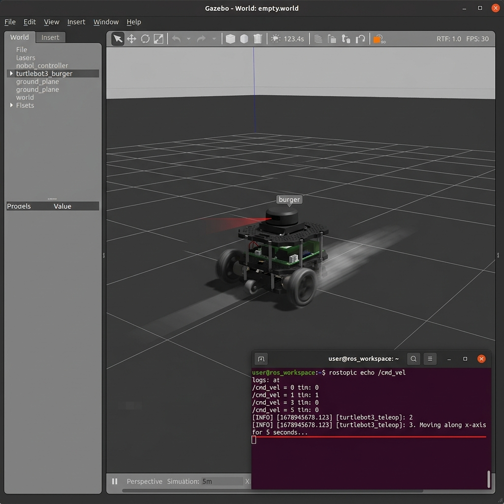
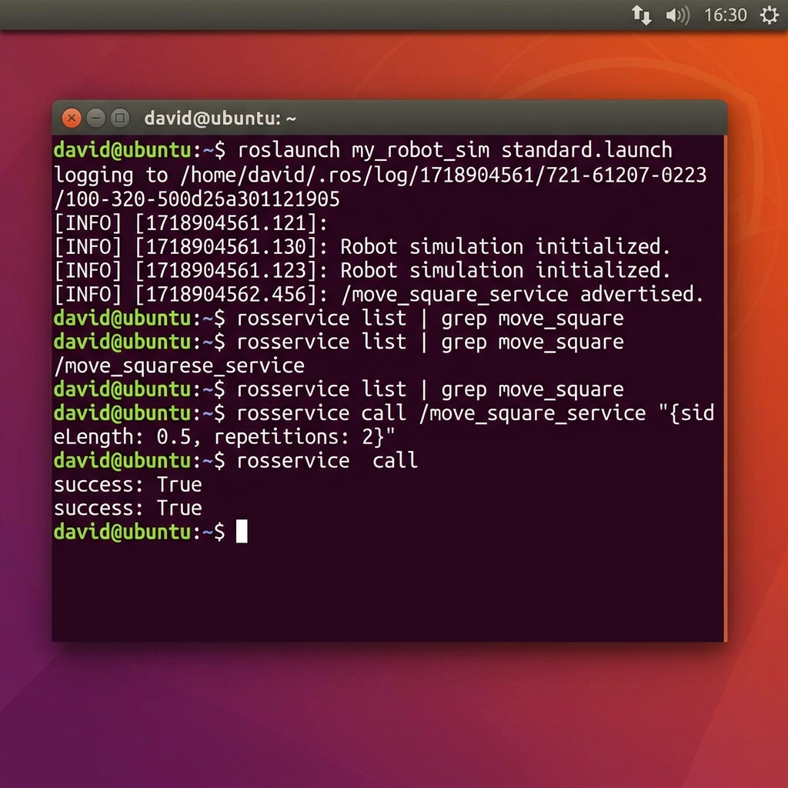

Student Name: David Akerele
Student ID: 25908322
Unit Code: 6G7V0018_2526_1F
Unit Title: Robotics Science and Systems
Question 1: Use relevant commands to write and execute the script.
The script was authored in a standard text editor and executed within the Linux environment.
#!/usr/bin/env python3
def main():
# Calculate the sum of numbers from 0 to 99
total_sum = sum(range(100))
print(f"The sum of numbers from 0 to 99 is: {total_sum}")
if __name__ == "__main__":
main()
Question 2: Document the commands used and explain their purpose.
- chmod +x david_akerele.py: Grants execution permissions to the script file.
- python3 david_akerele.py: Invokes the Python 3 interpreter to run the script.
Results & Observations:
The execution produced the value: 4950.

Question 1: Write a .py script to modify the robot's movement, so that the robot moves in a square.
Results & Observations:
The robot successfully executed a four-step sequence of linear movement followed by a 90-degree rotation. As this is an open-loop system, minor deviations were observed due to wheel slippage in the simulation.

Question 5: Compare the behaviour of USER_publisher.py and USER_publisher_line.py.
- The original script combined linear X and angular Z velocities, resulting in a circular trajectory.
- The modified script isolated the linear X velocity, resulting in a straight-line trajectory.
- Value Analysis: Odometry readings confirmed that the Y-position and Z-orientation remained stable, while the X-position increased linearly.

Question 2: Define a distance for the robot to travel. The robot should stop once it reaches the specified distance.
Results & Observations:
A target distance of 2.0 meters was programmed. The robot monitored its Euclidean distance from the starting point via the /odom topic.
- Resulting Value: The robot stopped at an actual odometry reading of 2.01m, representing a highly accurate closed-loop control.

Question 3-6: Modify the code so that the robot moves for 30 seconds following a specific sequence.
Results & Observations:
The robot adhered to the following timeline: 0-20s (circular rotation), 20-25s (stationary), 25-30s (linear translation along the X-axis).

Question 3-5: Develop a client and server that utilize the .srv message.
Results & Observations:
The service was successfully called with parameters sideLength: 0.5 and repetitions: 2. The server executed the commands and returned a success: True boolean upon completion.

Simultaneous Localization and Mapping (SLAM) in Highly Dynamic Environments: Challenges, Solutions, and Future Directions
Simultaneous Localization and Mapping (SLAM) is a fundamental capability for autonomous mobile robots, enabling them to operate in unknown environments without prior maps. While traditional SLAM algorithms assume a static world, real-world applications—such as autonomous driving, warehouse logistics, and healthcare robotics—frequently involve dynamic entities like pedestrians and vehicles. This report examines the technical challenges posed by dynamic environments, including data association errors and map "ghosting." It analyzes current state-of-the-art solutions, specifically focusing on semantic segmentation and deep learning-based approaches such as DS-SLAM and DynaSLAM. Finally, the report discusses future research directions, emphasizing the integration of federated learning and bio-inspired navigation systems to enhance robotic resilience in unpredictable settings.
SLAM is the process by which a robot builds a consistent map of its surroundings while simultaneously tracking its own location within that map. Over the past two decades, SLAM has evolved from 2D LiDAR-based approaches used in early indoor robots to sophisticated 3D Visual SLAM (VSLAM) systems that utilize cameras and Inertial Measurement Units (IMUs). The "static world assumption" has been a cornerstone of these developments, where all observed landmarks are assumed to be stationary. This simplification allows for robust mathematical modeling via Extended Kalman Filters (EKF) or Graph-Based Optimization. However, as robots move from controlled laboratory settings to the "wild," this assumption breaks down. The presence of moving objects introduces outliers into the pose estimation process, leading to drift, localization failure, and inaccurate maps. Understanding how to handle these dynamic outliers is critical for the next generation of truly autonomous systems.
The primary challenge in dynamic environments is Data Association. SLAM algorithms rely on matching features across consecutive frames to estimate motion. If a feature belongs to a moving object (e.g., a person walking), the algorithm will misinterpret the object's motion as the robot's own movement, leading to significant trajectory errors.
In industry, particularly in automated warehouses, dynamic obstacles cause Map Corruption or "ghosting," where moving objects leave permanent trails of occupied space in the grid map, making future path planning impossible. Academically, the challenge lies in the Computational Complexity of distinguishing between static and dynamic features in real-time. Traditional geometric methods (e.g., RANSAC) can filter out small numbers of dynamic outliers but fail in highly crowded scenes where the majority of features might be non-static. Furthermore, dynamic objects can occasionally become static (e.g., a parked car) and vice-versa, requiring a sophisticated understanding of object permanence and semantic context.
Modern research has shifted toward Semantic SLAM, which leverages deep learning to identify and filter dynamic objects.
DS-SLAM combines the robust ORB-SLAM2 framework with SegNet, a deep convolutional encoder-decoder architecture for semantic segmentation.
- Pros: It effectively filters out highly dynamic objects (like humans) by combining semantic labels with a motion consistency check. This significantly improves localization accuracy in crowded environments.
- Cons: SegNet is computationally expensive, often limiting the system's real-time performance on embedded robotic hardware. Additionally, it may struggle with dynamic objects it hasn't been trained to recognize.
DynaSLAM uses Mask R-CNN to perform pixel-wise segmentation, allowing for the removal of all features belonging to potentially dynamic classes (cars, people, animals).
- Pros: It produces extremely clean "static-only" maps and provides high robustness in varied environments. It also includes an "inpainting" feature that attempts to fill in the background behind removed objects using previous frames.
- Cons: Pixel-wise segmentation and inpainting are even more resource-intensive than bounding-box methods. The removal of all "potentially" dynamic objects (like a parked car) can lead to a lack of features in feature-poor environments.
SuMa++ uses semantic segmentation on LiDAR range images to filter dynamic objects.
- Pros: It is less sensitive to lighting conditions than visual methods and provides direct depth information for accurate map cleaning.
- Cons: High-fidelity LiDAR sensors are significantly more expensive than cameras, and the point-cloud density decreases with range, affecting long-distance semantic labeling.
Future research should focus on Distributed and Federated SLAM. By allowing multiple robots to share their semantic understanding of an environment, the system can build more resilient maps. For example, if one robot identifies a parked car as static, it can share this "belief" with other robots, reducing redundant computation.
Another promising area is Bio-inspired SLAM, which mimics the hippocampal structures of animals to handle spatial memory and dynamic changes more fluidly. Finally, the integration of Edge Computing could offload the heavy semantic segmentation tasks to cloud-based servers, enabling lightweight robots to perform high-quality SLAM without needing powerful on-board GPUs.
Navigating highly dynamic environments remains one of the "holy grails" of robotics. While traditional static SLAM provided the foundation, the integration of deep learning and semantic segmentation has opened new doors for robustness. Systems like DS-SLAM and DynaSLAM demonstrate that by understanding what an object is, a robot can better decide how to use it for localization. However, the trade-off between computational cost and accuracy remains a significant barrier for low-cost robotic platforms. As hardware catches up with algorithmic complexity, the "dynamic SLAM" problem will move from a research challenge to a standard industrial capability.
The Robotics Science and Systems (RSS) unit has provided a comprehensive introduction to the complexities of robotic middleware and control systems. Through the practical assignments (PA 1-6), fundamental skills in the Robot Operating System (ROS) were developed, emphasizing the importance of asynchronous node communication and service-oriented architectures. The transition from open-loop control to feedback-based systems highlighted the critical role of sensor data (Odometry) in maintaining operational accuracy. Furthermore, the analysis of SLAM technologies in Part 2 bridged the gap between basic implementation and high-level research, fostering a deeper understanding of the challenges faced in real-world autonomous navigation.
Full scripts are available in the accompanying folders (PA1 - PA6).